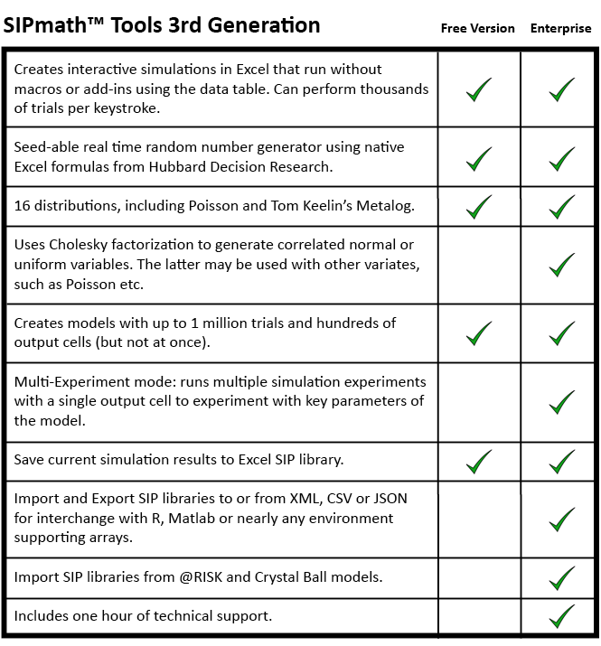
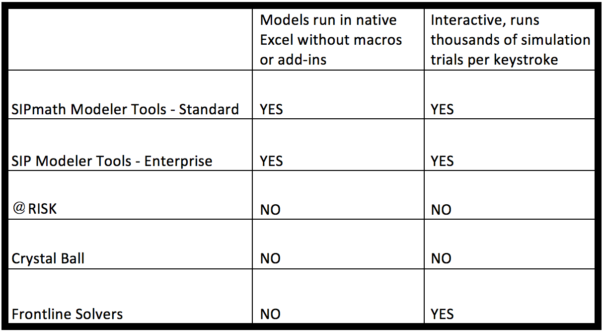
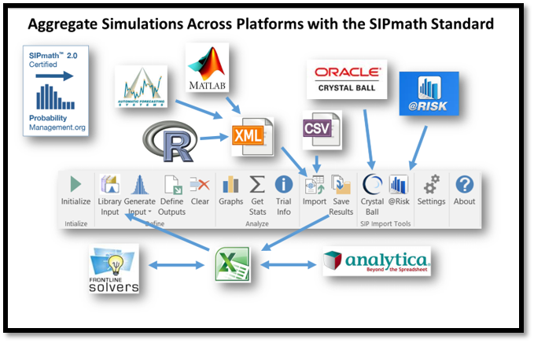

New Enterprise SIPmath™ Modeler Tools
ProbabilityManagement.org announces a paid Windows Enterprise version of our our SIPmath Modeler Tools for Excel. We still recommend that you download the Standard SIPmath Modeler Tools for Windows or Mac at no charge to get your feet wet. Then move up to the paid version when you need more performance, more support, and less guilt.
More Performance: See the chart below for a comparison of the standard and enterprise versions.
More Support: Receive one hour of technical support, and free attendance to all of our remaining 2017 ProbabilityManagement.org webinars when you purchase the Enterprise SIPmath Modeler Tools.
Less Guilt: Both versions of the SIPmath tools are unique in that they create blindingly fast simulation models that run without the tools themselves. We know that many of our users feel guilty about using such a great product without supporting nonprofit ProbabilityManagement.org. The fee of $500 for the Enterprise version will make you proud to have helped us fulfill our mission of improving the communication of uncertainty through education, best practices, and standards.
You Don't Need the Tools to Run the Models
Imagine building a birdhouse with a saw and hammer, and then requiring any bird using it to buy their own saw and hammer. That is the current paradigm for spreadsheet simulation software. But the SIPmath Modeler Tools create models that use the native Excel Data Table function. The result is an XLSX file without macros or add-ins, which may be shared with 500 million of your closest friends.
And It's Interactive
The models produced, depending on size, can run thousands of simulation trials per keystroke. Most other packages require a command to be executed to run a simulation, and the results are not instantaneous even for small models. Think of a bicycle with a command line interface. You type "Lean Left," hit the Enter key and plow into a fire hydrant. Once you are exposed to real-time simulation you will never go back.
What’s New in Version 3


Click on a button to watch the feature's tutorial.


Videos and Documentation
Videos and Documentation
(Excel 2016 and Newer)
Purchase our Enterprise SIPmath Modeler Tools for more features and technical support:
Attend our webinars for free with purchase.
Read Sam's article in Analytics Magazine about the SIPmath Tools
Frequently Asked Questions
If you find the tools useful, please
2.0 Tools for earlier versions of Mac available here.